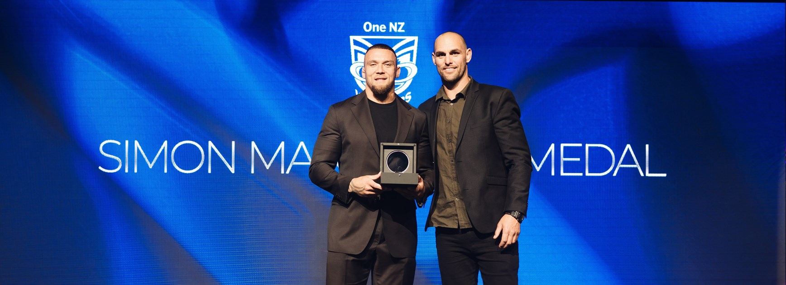
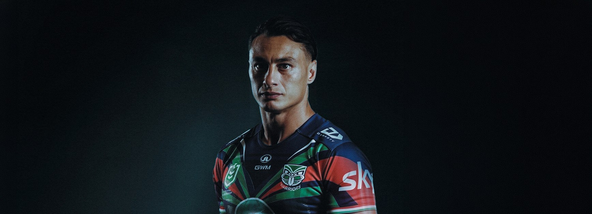
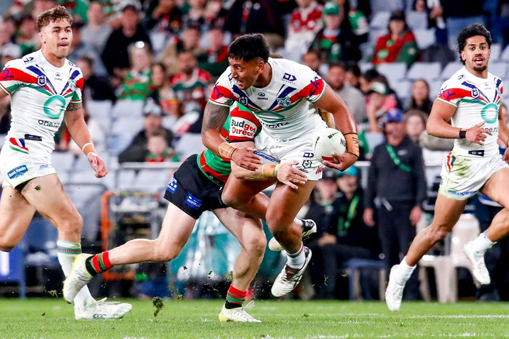

Knights stun Warriors in Eden Park semi-final
Newcastle held on for a 12-10 win over the Warriors at Eden Park on 20 September.
Source: NRL.com
WAHS HUB NEWS
Warriors updates, match stories and club news in one place.
BROWSE STORIES
Use the buttons below to show the type of story you want to read.
Newcastle held on for a 12-10 win over the Warriors at Eden Park on 20 September.
Source: NRL.com
Dallin Watene-Zelezniak and Leka Halasima were confirmed in the starting side.
Source: Warriors.kiwi
Major Auckland landmarks were lit in Warriors colours ahead of the sold-out Eden Park final.
Source: Warriors.kiwi
The co-captain was named the Warriors' premier player of the 2026 season.
Source: Warriors.kiwi
Te Maire Martin, Chanel Harris-Tavita and Charnze Nicoll-Klokstad returned for the Sea Eagles clash.
Source: Warriors.kiwi
The young forward was recognised at the Warriors' 2026 awards night.
Source: Warriors.kiwiImages and some information on this prototype are sourced from the official One New Zealand Warriors website and NRL.com.
External content is credited here and through the source links on each article.